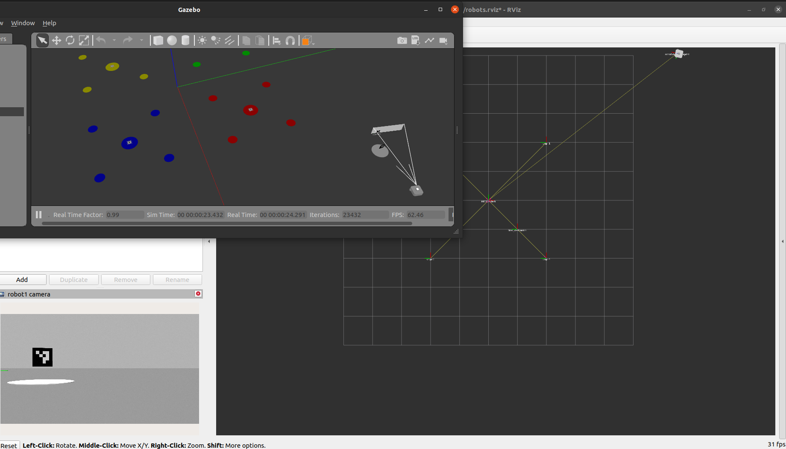

Arucomarker Detection
Goal Reacher Robot using Arucomarkers
- Project Details: Github
Project Description
Goal Reacher Robot using Arucomarker is an advanced robotic system designed to navigate through a predefined environment using visual markers for guidance. This project leverages the integration of ROS2, OpenCV, and advanced sensor technologies to achieve precise navigation and target reaching capabilities.
Key Features
- Employs OpenCV for detecting Arucmarkers, facilitating accurate localization and navigation.
- Converts relative frame data to world frame coordinates, enabling the robot to understand its position and destination within the environment.
- Adjusts the robot's path based on real-time marker detection and frame transformations to reach specific targets efficiently.
Technologies Used
- ROS2 Galactic Distribution for robot operating system functionalities
- OpenCV for computer vision tasks related to marker detection
- Gazebo for creating a simulated environment for testing and development